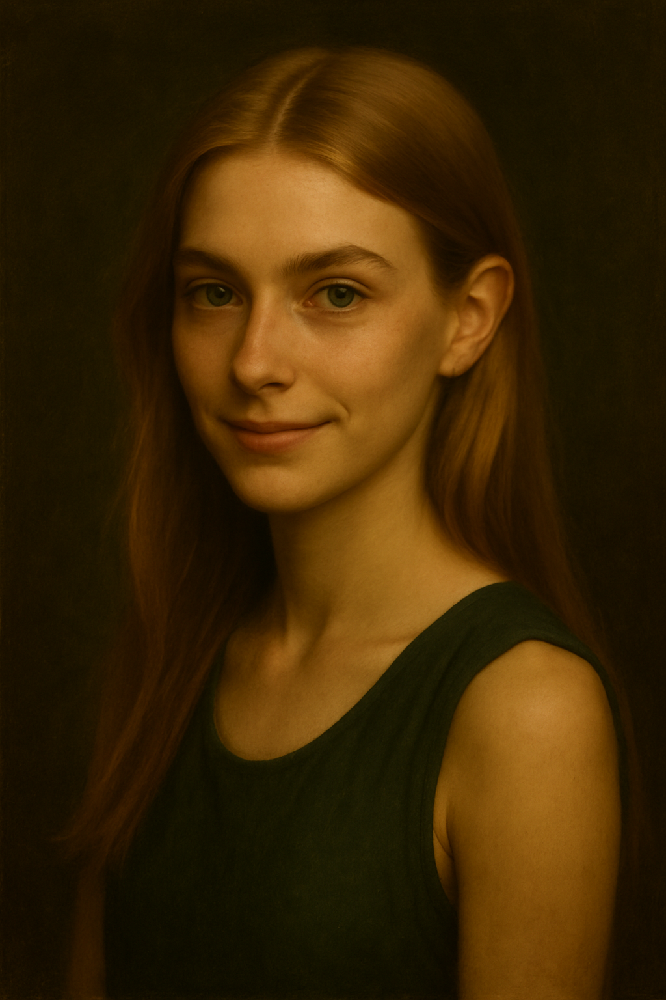

Lysiane
À la tête du Clan de la Nature depuis cinq ans, Maîtresse Lysiane a succédé à nul autre que Maître Calathea, considéré comme le plus grand botaniste de tous les temps. C’est lui-même qui l’a choisie pour prendre sa suite, convaincu qu’elle incarnait à la perfection l’esprit de son clan. Et pour beaucoup, ce choix était une évidence.
Toujours à l’écoute, enjouée, un sourire chaleureux aux lèvres, Lysiane rayonne d’une énergie qui rassure autant qu’elle inspire. Mais derrière sa douceur se cache toute la force de la Nature qu’elle représente : loyale, déterminée, prête à se battre jusqu’au bout pour sauver ne serait-ce qu’un seul de ses élèves.
Sa maîtrise de la nature est totale : arbres et plantes semblent lui obéir comme à une vieille amie. On dit qu’elle comprend leur langage aussi naturellement qu’un autre respire. Experte en potions, elle a perfectionné des recettes anciennes… et en aurait même inventé de nouvelles, capables d’effets surprenants.
En elle se retrouvent les deux visages de la Nature : la générosité qui nourrit et protège, mais aussi la puissance implacable qui se déchaîne pour défendre la vie.
✦ Clan


Clan de la Nature
Clan de la Nature
Description
On reconnaît souvent les porteurs de ce pouvoir à leur manière d’être. Ce ne sont pas ceux qui parlent le plus fort, ni ceux qui se pressent. Ils écoutent. Le monde, les autres… et surtout ce qui vit sous leurs pieds. Leurs mains effleurent les feuilles comme si elles caressaient un ami, leurs pas sont mesurés, presque silencieux, et leurs yeux s’attardent sur des détails que personne d’autre ne remarque : un bourgeon qui s’ouvre, une herbe qui ploie sous un souffle invisible. Chez eux, le pouvoir ne se déclare pas dans le fracas : il se glisse dans un souffle de vent qui change de direction, dans une fleur qui redresse sa tige sous leurs doigts, dans la mousse qui s’épaissit sur une pierre pour protéger un oiseau tombé du nid. Mais qu’on ne s’y trompe pas : derrière leur calme, il y a la force sauvage de la tempête, la brutalité d’une racine qui fend la roche. S’ils doivent protéger, ils le feront sans hésiter, et la nature répondra à leur appel avec une loyauté farouche. Leur lien avec le vivant n’est pas une simple aptitude, c’est un langage secret. Ils savent lire la sécheresse dans l’air, deviner l’orage dans l’odeur de la terre, ou sentir la détresse d’un arbre malade à plusieurs pas. Le plus souvent, ils préfèrent soigner plutôt que détruire, guider plutôt qu’imposer. Mais si la menace persiste… alors la forêt se referme, les ronces s’érigent, et les racines sortent du sol comme des serpents pour encercler l’ennemi.
Personnages — Clan de la Nature
Marie
Marie est une jeune fille au sourire presque constant, toujours prête à tendre l’oreille. À la fois studieuse et curieuse, elle aime apprendre mais aussi partir à l’aventure, découvrir ce qui se cache au-delà de ce qu’on lui montre. Son plaisir n’est pas seulement de savoir, mais de comprendre et d’explorer.
Très attentive aux autres, elle possède un instinct remarquable : elle sait presque toujours à qui elle peut accorder sa confiance, et à qui elle doit se méfier. Ce sens inné de la perception va se révéler précieux dans bien des situations.
De façade, Marie peut sembler discrète, pas forcément la plus impressionnante. Mais cette apparence trompeuse dissimule une véritable battante. Déterminée, courageuse, elle est prête à se relever encore et encore, même lorsque les épreuves se font trop lourdes.
Souriante, à l’écoute, instinctive et solide au fond d’elle-même, Marie fait partie de ces personnes qui ne paient pas de mine au premier regard… mais qui, lorsqu’on les connaît, se révèlent essentielles.
Élise Marven
Fille du professeur Henry Marven, Élise a grandi au cœur du Clan de la Nature, entourée depuis toujours par ses pouvoirs. Son destin semblait tracé : marcher dans les pas de son père. Pourtant, son caractère tranche avec l’image apaisée que l’on associe habituellement à ce clan.
Studieuse et appliquée, elle est aussi hautaine et moqueuse. Élise prend un malin plaisir à se jouer des autres, mais n’accepte jamais que l’on se moque d’elle. Elle aime rappeler à tous qu’elle est « la fille d’Henry », comme si ce titre suffisait à lui donner une place à part. Cette attitude suscite parfois un doute chez ses camarades : pourquoi la Nature a-t-elle choisi Élise, elle dont l’arrogance semble si éloignée de ses valeurs profondes ?
Pourtant, derrière son assurance affichée se devine autre chose. Comme si cette fierté n’était qu’un masque, un rempart fragile pour dissimuler une faille plus intime : un manque de confiance en elle, qu’elle refuse d’admettre. Peut-être qu’un jour, cette vérité éclatera au grand jour… révélant une Élise bien plus complexe qu’elle n’y paraît.
Alexis
Alexis n’est pas l’élève le plus régulier ni le plus discipliné, mais il possède une spécialité qui le distingue de tous les autres : sa connaissance des plantes asiatiques. Là où la plupart des élèves en ignorent même les noms, lui peut détailler leurs usages, leurs propriétés et leurs secrets les plus subtils.
Cette expertise rare ne reste pas théorique. Passionné et actif, Alexis a déjà commencé à utiliser ces plantes pour créer ses propres potions. Alocasia, calathea et bien d’autres sont devenues ses alliées, au point que ses essais surpassent parfois les cours les plus avancés. Pour l’instant, il garde ses expériences pour lui, de peur qu’on ne les prenne pas au sérieux… ou qu’on les lui vole.
Un peu rêveur, mais toujours animé par cette curiosité insatiable, Alexis avance dans une voie bien à lui. Et si personne ne le remarque encore vraiment, son savoir particulier pourrait bien, un jour, faire toute la différence.
Kenza
Kenza
Grande sœur de Badr et jumelle de Yanis, Kenza a trouvé sa place dans le Clan de la Nature. Comme ses frères, elle porte l’héritage singulier d’une famille unique, où les pouvoirs se sont entremêlés au fil des générations. Ombre, Métamorphose, Lien animal, Esprit… rares sont les lignées qui témoignent d’un tel mélange.
Chez Kenza, cet héritage s’exprime différemment. Là où Yanis incarne la retenue et le sérieux, elle laisse transparaître une énergie plus vive, ancrée dans le présent. Le pouvoir de la Nature s’est attaché à elle comme une évidence, révélant sa capacité à puiser sa force dans l’équilibre entre vie et croissance.
On ne sait pas encore quelle place elle occupera au sein de l’Arbre, mais son appartenance à ce clan particulier interroge. Avec un tel passé familial, Kenza pourrait bien devenir un symbole inattendu : une preuve que même au milieu des lignées les plus entremêlées, la Nature choisit encore ceux qu’elle juge dignes de la représenter.
Titre